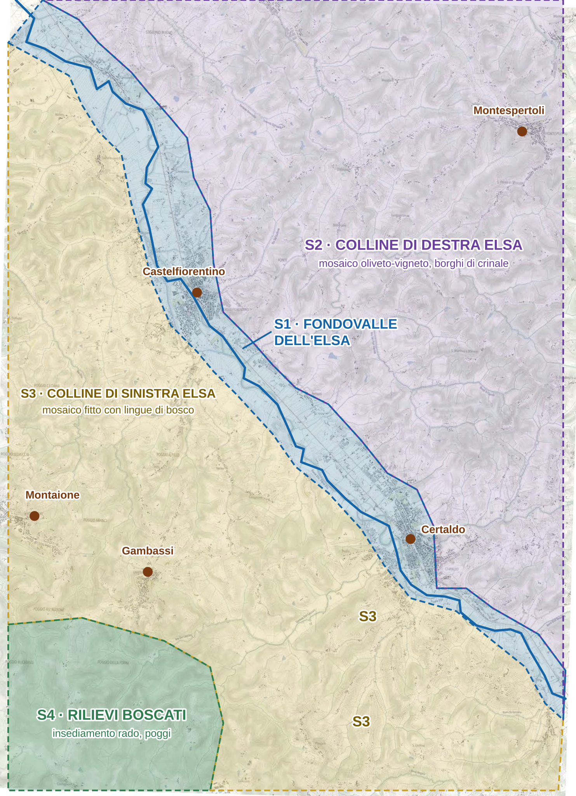
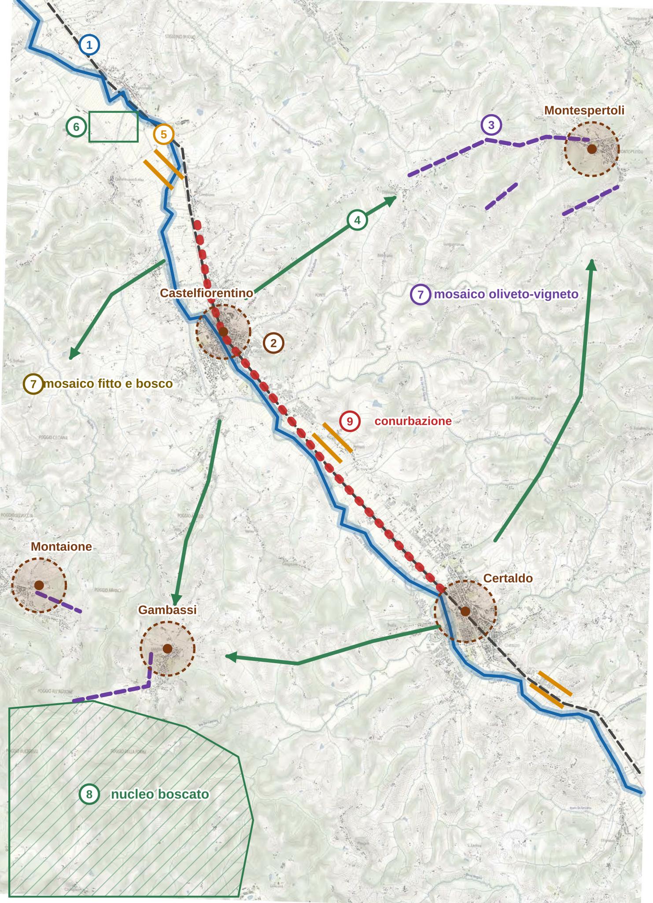

In questa pagina
- La consegna della traccia
- 1. Il metodo in 10 passaggi
- 2. Passaggio per passaggio
- 3. L'elaborato da consegnare
- Lucido 1: articolazione dei sistemi territoriali
- Lucido 2: elementi cardine della struttura paesaggistica e territoriale
- Prima consegna: programma di lavoro (massimo 2 facciate)
- Seconda consegna: banche dati, enti, monitoraggio (massimo 2 facciate)
- 4. Prima di consegnare
- 5. Cosa portare a memoria
- 6. Come riusarlo su altre tracce
- 7. Cosa ho verificato e cosa no
Svolgimento guidato: documento preliminare per un PSI
UNIFI, II sessione 2024, prova pratica, traccia 3 (bassa Valdelsa). Svolgimento mio, a scopo didattico: non è una soluzione ufficiale. Non esiste una risposta unica, conta il ragionamento. Testo e carta sono in 03_TRACCE/UNIFI_pianificatore/2024_II.pdf.
Metodo usato: Documento preliminare di PS e PSI · Tutte le prove svolte
La consegna della traccia
UNIFI, II sessione 2024, prova pratica, Pianificatore Senior, traccia 3.
Traccia in PDF, pagina 5 · Carta dell’allegato A, pagina 6
Con riferimento ai caratteri ambientali, territoriali e paesaggistici desumibili dall’osservazione della cartografia riportata nell’allegato A e relativi al contesto della bassa Valdelsa, il candidato tracci le linee essenziali di un documento preliminare, da approvare in Consiglio Comunale, per l’elaborazione di un Piano Strutturale Intercomunale.
Tale documento dovrà fare riferimento:
- a una preliminare individuazione degli elementi che costituiscono la struttura identitaria del territorio dei comuni coinvolti, con riferimento anche alle invarianti strutturali da sottoporre a tutela. A tale proposito il candidato, esaminando sulla base della cultura acquisita i caratteri territoriali rappresentati, dovrà indicare sull’estratto cartografico, sovrapponendo uno o più fogli di carta trasparente, una possibile articolazione dei sistemi territoriali e una prima individuazione degli elementi cardine della struttura paesaggistica e territoriale;
- a un programma di lavoro per l’acquisizione degli ulteriori elementi conoscitivi necessari per definire e localizzare le norme di Piano coerentemente con gli obiettivi di valorizzazione delle risorse naturali e antropiche (massimo 2 facciate, con calligrafia chiara e leggibile);
- all’indicazione delle banche dati, degli enti e degli organismi pubblici da consultare per incrementare tali elementi conoscitivi anche ai fini di garantire le possibilità di aggiornamento in vista del monitoraggio di attuazione (massimo 2 facciate, con calligrafia chiara e leggibile).
Trascrizione dalla scansione: in caso di dubbio fa fede il PDF.
1. Il metodo in 10 passaggi
| # | Passaggio | Tempo | Cosa fai | Risultato |
|---|---|---|---|---|
| 1 | Scomponi la traccia | 20 min | Sottolinea ogni verbo e ogni limite. Fai la checklist di cosa consegnare. | Tre consegne: lucidi, 2 facciate, 2 facciate. |
| 2 | Inquadra | 10 min | Dove sono, quale piano, quale procedimento, quali norme. | Ambito 9 del PIT. PSI: artt. 23 e 94. Avvio: art. 17. VAS: LR 10, art. 23. |
| 3 | Leggi la carta per strati | 60 min | A matita, le quattro strutture dell'art. 3 una alla volta. Annota anche ciò che non riesci a leggere. | Note su fiume, rilievi, centri, trama agricola. |
| 4 | Sintetizza in sistemi | 30 min | Raggruppa in 3-5 parti omogenee. Dai nomi che descrivono. Sono parti che funzionano in modo diverso, non zone. | Lucido 1. |
| 5 | Scegli gli elementi cardine | 30 min | Test: se lo tolgo, il territorio cambia identità? Se no, non è cardine. | Elenco per il lucido 2. |
| 6 | Formula le invarianti | 30 min | Scrivi regole e rapporti, non oggetti. Non sono divieti: fissano le condizioni per trasformare (art. 5 c. 2). | Tabella delle invarianti. |
| 7 | Disegna a penna | 120 min | Prima sistemi, poi elementi, poi legenda. Pochi segni. Nord e titolo. | Lucidi 1 e 2. |
| 8 | Trasforma i dubbi in programma | 60 min | Per ogni dato mancante scrivi quale norma di piano permette di decidere. | Prima consegna scritta. |
| 9 | Abbina dati, enti, monitoraggio | 50 min | Per ogni tema: chi ha il dato, chi dà il parere, ogni quanto si aggiorna. | Seconda consegna scritta. |
| 10 | Controlla | 30 min | Rileggi la checklist: limiti di facciate, nessun segno personale, coerenza tra lucidi e testo. | Consegna. |
Tempi su 7 ore e 20, con 40 minuti di margine sulle 8 ore. Nell'allenamento da 4 ore fai i passaggi 1-6, il lucido 1 e la scaletta delle due consegne scritte.
2. Passaggio per passaggio
Passaggio 1. Scomponi la traccia
Il verbo è «tracci le linee essenziali»: non si chiede un piano, né una previsione di progetto. La checklist è questa:
- Lucidi sulla carta: articolazione dei sistemi territoriali e primi elementi cardine.
- Testo o note: struttura identitaria e invarianti da tutelare (nessun limite indicato).
- Massimo 2 facciate: programma di lavoro per acquisire le conoscenze «per definire e localizzare le norme di Piano».
- Massimo 2 facciate: banche dati, enti e organismi, anche per il monitoraggio.
Passaggio 2. Inquadra
- Luogo: sulla carta leggo Castelfiorentino, Certaldo, Montespertoli, Gambassi e Montaione. Ambito 9 del PIT, Val d'Elsa.
- Strumento: PSI, con gli stessi contenuti del PS (art. 92) più le politiche di area vasta (art. 94 c. 2).
- Chi avvia: la traccia parla di Consiglio Comunale. Nel PSI l'avvio spetta all'ente responsabile dell'esercizio associato (art. 23 c. 5). Scrivilo in una riga, senza contestare la traccia.
- Documento preliminare: nella LR 10 (art. 23) riguarda i possibili effetti ambientali e i criteri del rapporto ambientale, e parte insieme all'avvio (LR 65, art. 17 c. 2). Il contenuto dell'avvio è all'art. 17 c. 3.
Passaggio 3. Leggi la carta per strati
È un'analisi GIS senza PC: ogni riga è un layer, l'ultima colonna è ciò che ne ricavi.
| Struttura (art. 3) | Cosa vedo | Cosa ne ricavo |
|---|---|---|
| Idro-geomorfologica | L'Elsa attraversa la carta in diagonale con meandri, il piano si allarga a nord e tra i centri. Affluenti a pettine da entrambi i lati, come il Rio Pesciola. | Spina e pettine: tutto scende verso il fiume. |
| Ecosistemica | La trama vegetale segue i corsi d'acqua. A sud-ovest il rilievo è più continuo e meno punteggiato di colture. | Il bosco non è leggibile con certezza: va nel programma. |
| Insediativa | Castelfiorentino e Certaldo nel fondovalle, con aree produttive e ferrovia in mezzo. Montespertoli, Gambassi e Montaione in collina, su crinale. | Due logiche: lineare nel piano, di crinale in collina. |
| Agro-forestale | Campi lunghi e regolari nel piano. Puntinato fitto sui versanti orientali, che ha l'aspetto di colture legnose. Meno trama a sud-ovest. | Tre paesaggi agrari diversi. |
Passaggi 4-6. Dai layer ai sistemi, agli elementi, alle regole
- Sistemi: li separo perché funzionano in modo diverso. Il fondovalle concentra relazioni e pressioni, le colline conservano la struttura storica, i rilievi boscati fanno da riserva. Divido le colline in due perché il PIT e la carta mostrano paesaggi diversi tra destra e sinistra Elsa.
- Elementi cardine: applico il test. Se tolgo l'Elsa o saldo i centri il territorio cambia identità; un singolo edificio sparso no.
- Invarianti: scrivo rapporti, non oggetti. «Il fiume» è un oggetto; «il rapporto tra fiume, piana e versanti» è un'invariante.
3. L'elaborato da consegnare
Inquadramento (poche righe, sul lucido o a parte)
Il documento imposta il PSI dei comuni della bassa Valdelsa, nell'ambito 9 del PIT-PPR. Il territorio è strutturato dalla valle dell'Elsa: un fondovalle che concentra centri maggiori, produzione e infrastrutture, tra sistemi collinari di forte impronta mezzadrile. Obiettivo del piano è riequilibrare questo rapporto, in coerenza con l'obiettivo 1 della scheda d'ambito, tutelando i caratteri identitari della collina (obiettivo 3) e valorizzando le risorse naturali e antropiche.
L'avvio spetta all'ente responsabile dell'esercizio associato, attraverso l'ufficio unico di piano (LR 65, art. 23), con i contenuti dell'art. 17 c. 3 e insieme al documento preliminare di VAS (art. 17 c. 2; LR 10, art. 23). Temi di area vasta (art. 94 c. 2): mobilità e intermodalità lungo la valle, recupero degli insediamenti e territorio rurale, sistema produttivo, perequazione territoriale. I lucidi propongono una prima lettura, da verificare con il programma di lavoro: il perimetro del territorio urbanizzato si definirà all'adozione (DPGR 32/R, art. 3).
Struttura identitaria e invarianti da sottoporre a tutela
| Inv. | Invariante | Regola proposta |
|---|---|---|
| I | Rapporto tra fiume, piana e versanti | Il fondovalle resta spazio del fiume: niente restringimenti delle aree di pertinenza fluviale, deflusso degli affluenti garantito. |
| II | Continuità ecologica collina-fondovalle | I corsi d'acqua restano corridoi tra i rilievi boscati e l'Elsa, con fasce ripariali e varchi aperti. |
| III | Policentrismo e centri distinti | I centri di fondovalle restano riconoscibili e separati: niente saldature lungo fiume e ferrovia. |
| III | Regola crinale-borgo-versante | Borghi e strade di crinale mantengono il loro profilo. Le espansioni non ne alterano integrità e percezione. |
| IV | Mosaico collinare mezzadrile | Maglia poderale, viabilità minore, sistemazioni e colture legnose attorno ai nuclei si conservano anche con un'agricoltura che cambia. |
| IV | Piana agricola residua | Gli spazi aperti del piano restano agricoli e continui, come margine dei centri e riserva idraulica. |
Le invarianti non sono vincoli di non modificabilità: fissano le condizioni per le trasformazioni (art. 5 c. 2), e le limitazioni che ne derivano non si indennizzano (art. 7). I numeri I-IV corrispondono alle invarianti del PIT.
Lucido 1: articolazione dei sistemi territoriali

Legenda
| S1 | Fondovalle alluvionale dell'Elsa Piano, maglia regolare, fiume e ferrovia, centri e aree produttive. Sistema delle relazioni e delle pressioni. |
| S2 | Colline di destra Elsa Trama fitta di oliveti e vigneti, nuclei e strade sui crinali, valli strette che scendono al piano. |
| S3 | Colline di sinistra Elsa Stessa matrice mezzadrile, più aspra: mosaico fitto e bosco, centri di crinale. |
| S4 | Rilievi boscati Poggi e insediamento rado. Riserva ecologica e testata dei corsi d'acqua. |
Perché quattro sistemi. Riflettono come funziona il territorio: il fiume organizza il piano, le due fasce collinari ne sono la cornice storica, i rilievi boscati la riserva ecologica.
Come si disegna. Bordo tratteggiato a penna, campiture leggere a matita colorata, nome dentro ogni sistema. I bordi sono interpretativi, non confini catastali.
In aula il lucido sta sopra la carta in scala, quindi non serve riportare la scala. Aggiungi nord e titolo. Il tracciato qui è indicativo: serve a mostrare il tipo di segno, non è da ricalcare.
Lucido 2: elementi cardine della struttura paesaggistica e territoriale

Legenda
| 1 | Elsa e fasce ripariali Spina idraulica ed ecologica. Inv. I e II |
| 2 | Centri storici e pertinenze Da perimetrare nel PS (art. 92 c. 3; art. 66). Inv. III |
| 3 | Crinali insediati Borghi e strade di crinale. Inv. III |
| 4 | Relazioni trasversali Il «pettine» valle-collina. Inv. III e IV |
| 5 | Varchi nel fondovalle Ipotesi da verificare. Inv. II e III |
| 6 | Piana agricola a maglia regolare Residuo da conservare. Inv. IV |
| 7 | Mosaico collinare Trama poderale e colture legnose. Inv. IV |
| 8 | Nucleo boscato Matrice forestale. Inv. II |
| 9 | Criticità: conurbazione lineare Saldatura lungo fiume e ferrovia, rischio idraulico |
Come si legge. Il fiume è la spina, i centri sono i nodi, i crinali e le relazioni trasversali formano il pettine. Il rosso mostra dove questa struttura è sotto pressione.
Le posizioni di varchi e relazioni sono ipotesi da carta, da verificare sul campo: il programma di lavoro serve proprio a questo. La ferrovia è il tratteggio grigio. Ho usato solo segni che si fanno in fretta a mano.
Prima consegna: programma di lavoro (massimo 2 facciate)
Criterio. Le conoscenze si acquisiscono solo se servono a una decisione di piano. Per ogni tema si indica quindi la norma che permette di definire e localizzare, in coerenza con la valorizzazione delle risorse naturali e antropiche.
| Conoscenza da acquisire | Quale decisione permette | Come | Quando |
|---|---|---|---|
| Pericolosità idraulica, geologica, sismica | Dove la trasformazione è esclusa o condizionata | Indagini DPGR 5/R; PGRA; LR 41/2018 | Avvio |
| Beni paesaggistici (artt. 136 e 142) e PIT | Prescrizioni da rispettare, conformazione | Ricognizione con elaborato 8B e schede 3B; scheda ambito 9 | Avvio |
| Evoluzione storica dell'insediamento | Centri e nuclei storici, ambiti di pertinenza | Catasti storici, volo GAI, confronto con l'attuale | Primi 6 mesi |
| Uso del suolo e bosco | Perimetro TU (art. 4), invarianti II e IV | Ortofoto, uso del suolo, sopralluoghi | Primi 6 mesi |
| Rete ecologica e fasce ripariali | Varchi, corridoi, margini | Rilievo dei corsi d'acqua, verifica VINCA | Primi 6 mesi |
| Territorio rurale e aziende | Morfotipi, ambiti periurbani (art. 67), disciplina rurale | Censimento aziende, programmi aziendali | Primo anno |
| Popolazione, casa, economia, turismo | Dimensioni massime per UTOE (art. 92 c. 4) | Serie storiche, patrimonio inutilizzato | Primo anno |
| Servizi e dotazioni | Fabbisogni per UTOE, DM 1444 | Censimento dei servizi per comune | Primo anno |
| Produttivo e dismesso | Rigenerazione, art. 94 c. 2 lett. c | Mappa delle attività, aree libere, degrado (art. 123) | Primo anno |
| Mobilità e accessibilità | Art. 94 c. 2 lett. a; percorsi accessibili (art. 92 c. 5) | Flussi, ferrovia, ciclabili, trasporto collettivo | Primo anno |
| Stato di attuazione dei piani vigenti | Residui e coerenza (art. 17 c. 3 lett. b) | Bilancio delle previsioni attuate, per comune | Avvio |
Organizzazione. L'ufficio unico coordina e condivide una base dati unica per tutti i comuni (art. 23). Il garante cura il programma di partecipazione (artt. 36-38; art. 17 c. 3 lett. e): i saperi locali su paesaggio, rischio e servizi integrano il quadro conoscitivo. VAS e VINCA procedono in parallelo e usano gli stessi dati, se il piano interessa siti Natura 2000. Il termine massimo è di 4 anni dall'avvio (art. 94 c. 2 bis).
Sequenza. 1) Ricognizione e base dati comune. 2) Patrimonio e invarianti (statuto). 3) UTOE, dimensioni, strategia. 4) Proposta di PSI e rapporto ambientale.
Seconda consegna: banche dati, enti, monitoraggio (massimo 2 facciate)
Banche dati e aggiornamento.
| Tema | Enti e fonti | Aggiornamento per il monitoraggio |
|---|---|---|
| Cartografia, uso del suolo, PIT | Regione Toscana (Geoscopio) | A ogni nuova edizione |
| Ambiente, aria, acque | ARPAT, SIRA | Annuale |
| Rischio idraulico e frane | Autorità di bacino Appennino Settentrionale, Genio Civile, Consorzio di Bonifica | A ogni revisione del piano di bacino |
| Beni e paesaggio | Soprintendenza, Regione | A ogni nuovo vincolo |
| Popolazione ed economia | ISTAT, IRPET, Camera di Commercio | Annuale |
| Edilizia e attuazione | Uffici tecnici comunali, ufficio unico di piano | Continuo: pratiche e titoli |
| Agricoltura e foreste | ARTEA, Unione dei comuni | Annuale |
| Reti e servizi | Gestori di acqua, energia, rifiuti, trasporti | Annuale |
| Pianificazione di area vasta | Città metropolitana, comuni contermini | A ogni variante |
Enti da coinvolgere (art. 17 c. 3). Contributi tecnici (lett. c): Regione, Città metropolitana, comuni contermini, ARPAT, gestori dei servizi, con termine indicato. Pareri e assensi (lett. d): Soprintendenza, Autorità di bacino, Genio Civile, autorità competente per la VAS, ente competente per la VINCA se necessaria. Regione e Ministero partecipano alla conferenza paesaggistica per la conformazione al PIT (art. 31).
Monitoraggio. I dati si raccolgono in formato geografico omogeneo, così si confrontano nel tempo. Ogni indicatore ha valore iniziale, obiettivo e responsabile, da fissare nel rapporto ambientale (LR 10, art. 29).
| Indicatore | Unità | Responsabile |
|---|---|---|
| Suolo consumato fuori TU | ha/anno | Ufficio unico |
| Superficie permeabile nel fondovalle | % | Ufficio unico, Regione |
| Popolazione in aree a pericolosità elevata | abitanti | Comuni, Autorità di bacino |
| Aree dismesse recuperate | ha | Comuni |
| Dotazione di standard per UTOE | mq/ab | Comuni |
4. Prima di consegnare
- Ci sono lucidi, programma e banche dati? I limiti di 2 facciate sono rispettati?
- Ogni invariante è un rapporto o una regola, non un oggetto?
- Ogni riga del programma dice quale decisione permette?
- Le banche dati parlano anche di aggiornamento e monitoraggio?
- Testo e lucidi usano gli stessi nomi?
- Elaborati a penna, calligrafia leggibile, nessun segno di riconoscimento?
5. Cosa portare a memoria
- Art. 3: le quattro strutture del patrimonio. Art. 5: invarianti come condizioni, non divieti. Art. 7: nessun indennizzo.
- Art. 17 c. 3: i sei contenuti dell'avvio, dalla a alla f. Art. 17 c. 2: avvio e VAS insieme.
- Art. 92: quadro conoscitivo, statuto, strategia. Art. 23: ufficio unico e ente responsabile. Art. 94 c. 2: i quattro temi di area vasta. Termine di 4 anni.
- L'elenco degli enti del passaggio 9.
6. Come riusarlo su altre tracce
| Traccia | Cosa tieni | Cosa cambi |
|---|---|---|
| 2014 I T3, 2014 II T3 (PS, Chianti) | Lettura a strati, sistemi, invarianti, programma | PS di un comune: togli ufficio unico e temi di area vasta |
| 2015 I T1 (perimetro TU) | Lettura della carta | Aggiungi i criteri dell’art. 4 cc. 3 e 5 e le implicazioni |
| 2025 II T1, 2026 I T1 (scenari, strategico) | Sistemi e invarianti come base | Aggiungi scenari, assi, governance, indicatori |
7. Cosa ho verificato e cosa no
- Riscontrato sul testo: LR 65 (artt. 3, 5, 7, 17, 23, 92, 94, 31), LR 10 (artt. 23, 29), DPGR 32/R (art. 3), scheda d'ambito 9 per paesaggi, criticità e obiettivi 1 e 3.
- Interpretazione mia dalla carta: sistemi, varchi, relazioni, crinali. Tracciati approssimati a occhio sulla carta della traccia, non da dati geografici. Il bosco non si distingue con certezza su questa carta.
- Da conoscenza generale, da riscontrare: la competenza dei singoli enti e le frequenze di aggiornamento dei dati. Gli indicatori sono proposte mie.
- Non verificato: il testo non indica i comuni coinvolti: li ho letti sulla carta. Nessun commissario ha valutato questo svolgimento.